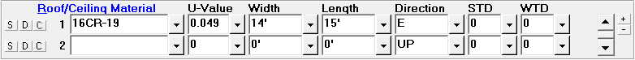

Roofs (Room Data, Default Room Data Windows) |
  
|
Roofs (Room Data, Default Room Data Windows) |
|

These inputs are only used if you have some portion of the ceiling of the room that is exposed to outside air or to an unconditioned space. If the ceiling of the room is exposed to a conditioned space (as occurs on first floor rooms of a two story building), you should not specify a roof for the room. Ceiling number 18 should be used with suspended ceilings and ceiling number 17 should be used any time the ceiling and the roof are one part with no dead air space between them. A complete list of the various material types is also shown in pages 83-84 (Table 4) of Manual J. Mobile home information is shown in Appendix A-1 of Manual J.
S Button (Save Material to Default Room): Saves the material to the Default Room Data window. If the material is already in the list of default materials it will be updated if needed.
D Button (Insert Default Material): Copies the default material from the Default Room Data window to the Room Data window. If more than one default material has been defined, a popup menu will let you select which of your default materials to copy. For row 1, this button works like the Copy Above or Default and Room Dimension menu item and toolbar button, while on rows 2 and up it works like the Insert Only Default Room Data menu item and toolbar button.
C Button (Copy Above Material): Copies the material from the above row. This button is disabled for material number 1. For rows 2 and up, works the same as the Copy Above or Default and Room Dimension menu item and toolbar button.
Roof Material: This entry corresponds to the four types of roofs allowed by Manual J. Click on the drop-down list arrow to display the Roof Material dialog. Note that when you select or type a valid roof construction code, the width and length fields become the width and length of the room (only if they had been blank).
U-Value: If you enter one of the standard construction codes and ceiling types Rhvac will display a suggested U-Value for you. This U-Value corresponds to the U-Values listed in Table 2 (pages 69-70) of Manual J. Note that if the summer U-Value is different from the winter U-Value, only the winter U-Value will be used (except for roof types 16-A and 17-A). You also have the option of entering your own U-Value. Rhvac will then use the U-Value you entered in its calculations. Note that the U-Value is determined by taking the inverse of the R-value. The valid range of inputs for this field is 0.000 to 9.999 Btuh/(sq. ft. F).
Width and Length: The width and length of the ceiling should correspond to the area of the ceiling that is exposed to an unconditioned space (either the outside air or an attic area). In cases where the ceiling is not rectangular and it is not possible to give a single length and width, you should consider entering the length as 1 foot and the width as the actual area. The main point to remember is that the product of the ceiling length and width entries should be equal to the actual ceiling area. Note that the ceiling area of a room can be different from the floor area. For sloped ceilings, click the item in the dropdown help to open the Sloped Ceiling Area Calculator.
Direction: This entry is only used when a skylight has been included on the roof. If there is no skylight on the roof, simply leave this entry at its default value of UP. If there is a skylight on the roof, you should enter the direction the skylight faces since the direction will affect the solar load. If you specified a horizontal skylight be sure to enter the roof direction as UP. For the other skylights (30 degrees, 45 degrees, or 60 degrees) simply enter the direction the skylight faces. If you do not know what direction the skylight faces, a northeast (NE) or northwest (NW) direction is a good mid range value to choose. Note that the lowest HTM values are for north facing skylights, following by south facing skylights. Also note that east and west facing skylights have the highest HTM values of all. Valid directions are:
NW - Northwest |
N - North |
NE - Northeast |
W - West |
|
E - East |
SW - Southwest |
S - South |
SE - Southeast |
STD, WTD: The roof Summer Temperature Difference (STD) and Winter Temperature Difference (WTD) inputs are only for situations where you have a roof under an unconditioned space and you do not want it to be treated like any of the conventional roof types. If you enter a value greater than zero here, the program will treat the roof in the same way that it does a partition wall, where it will determine the loss or gain by multiplying the u-factor times the area times the TD value you enter.
Note that if you enter a number greater than zero for either the STD or WTD, the roof will automatically be treated as a partition for both the heating and cooling load calculations.
Scrollbar: Use the scrollbar to scroll up and down through the list of roofs for the room.
Plus and Minus Buttons: Click the plus and minus buttons to increase or decrease the number of roofs visible at a time.